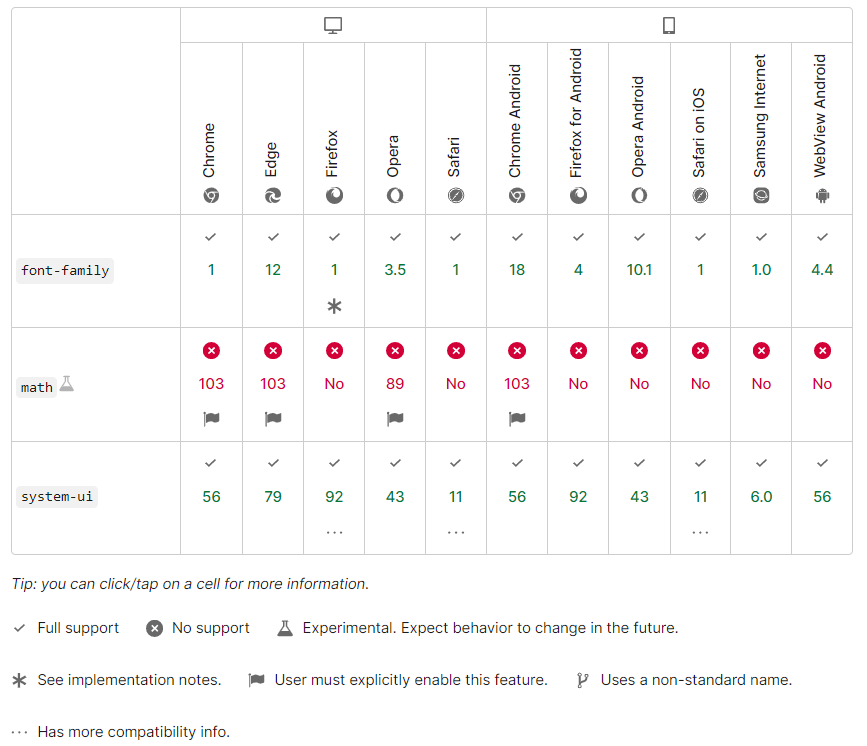

Поддержка браузера
Report problems with this compatibility data on GitHub
После того как CSS был указан, он будет полезен для разработки веб-страниц, только если один или несколько браузеров его реализовали. Это означает, что код был написан для превращения инструкции в нашем CSS-файле во что-то, что может быть выведено на экран. Мы рассмотрим этот процесс подробнее на уроке Как работает CSS. Это необычно для всех браузеров, чтобы реализовать функцию одновременно, и поэтому обычно есть пробел, где вы можете использовать некоторую часть CSS в одних браузерах, а не в других. По этой причине полезно проверять состояние реализации. На каждой странице свойств в MDN вы можете видеть статус интересующего вас свойства, чтобы вы могли определить, сможете ли вы использовать её на веб-сайте.